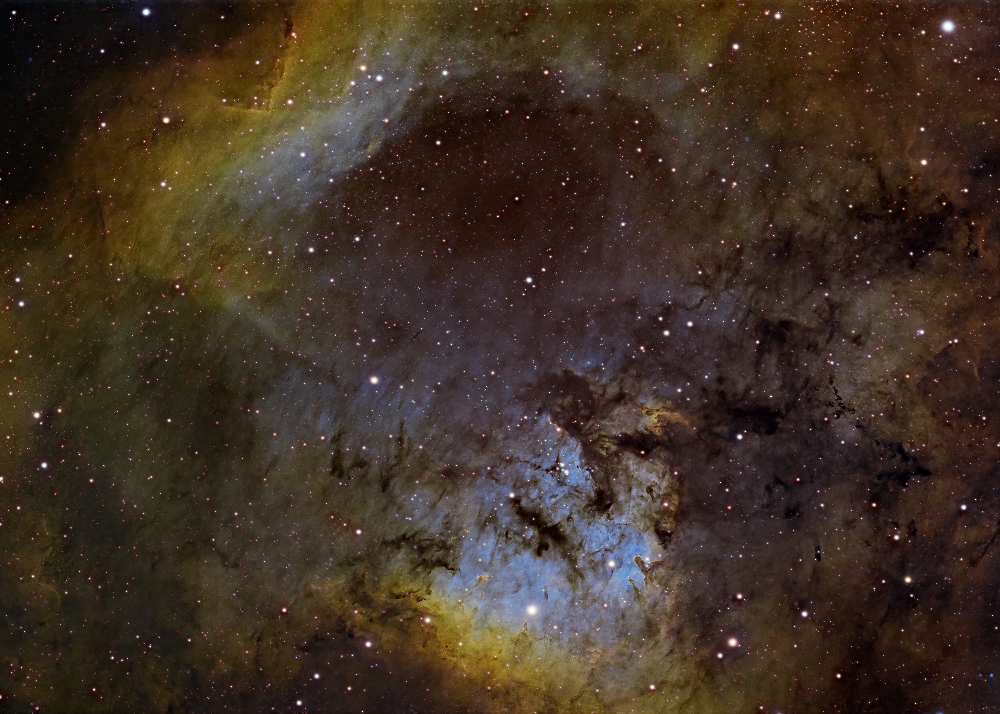

Astrophotography
Here live a sampling of my astrophotos. Taken using amateur equipment, each of these aims to capture some of the beauty that I see as I look out at the universe.

NGC 7822 - A Nebula in Cepheus, captured in Sulfur II/Hydrogen-alpha/Oxygen III

The Milky Way rising over a pu'u (cinder cone) on the slopes of Maunakea.

The Lagoon Nebula in Hydrogen-alpha/R/G/B. The first deep sky object I found with a telescope!

The Cocoon Nebula - a small star forming region. The associated molecular cloud drifts to the right of the image.

The Andromeda Galaxy

The Horsehead and Flame Nebulae - hanging from the belt of Orion!
Equipment
- Telescope specifications
- Camera equipment
- Filters and accessories
- Processing software